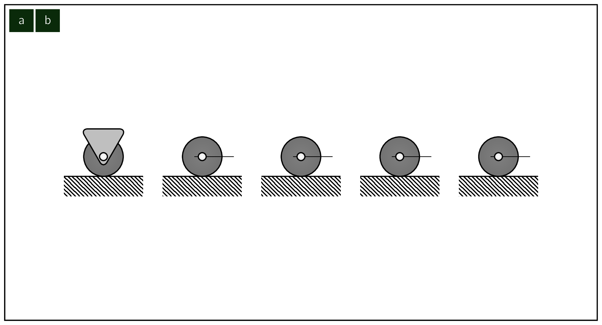
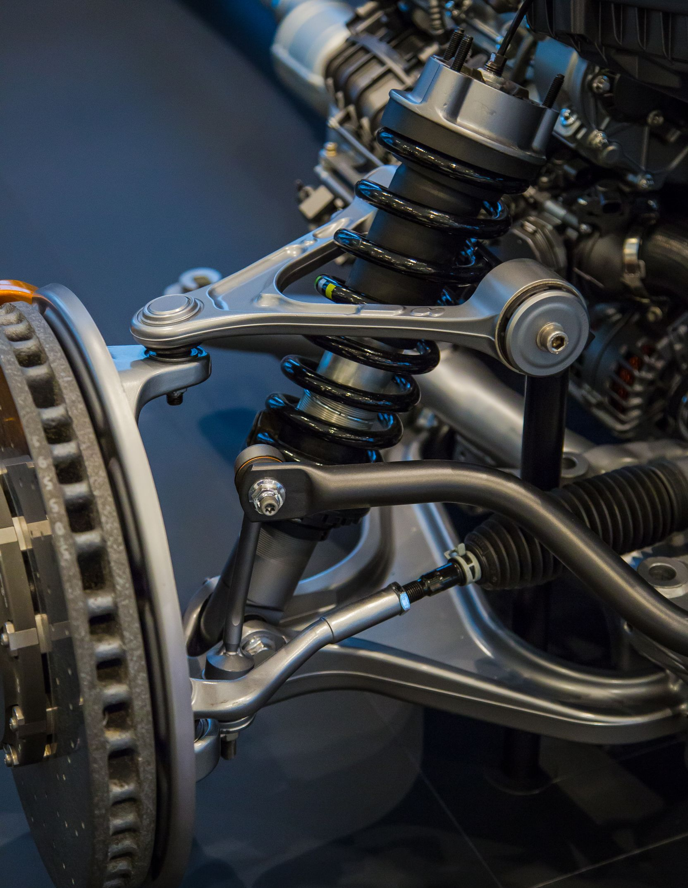
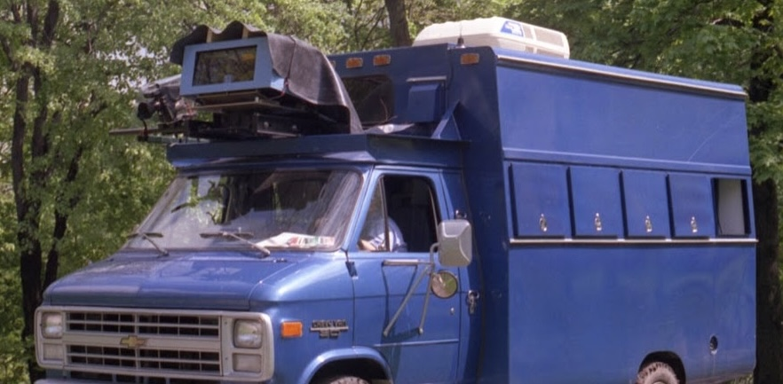
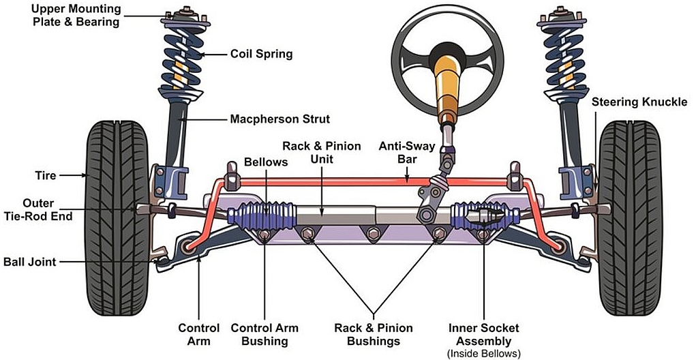
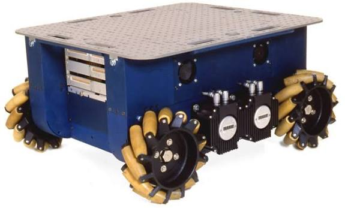
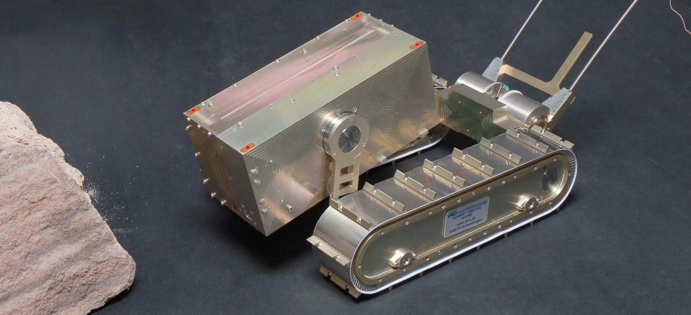
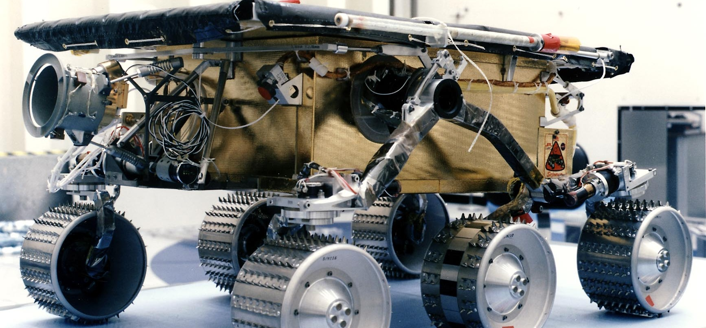
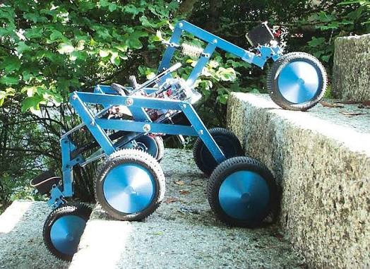

The wheel has been by far the most popular locomotion mechanism in AMRAutonomous Mobile RoboticsSelf-navigating machines moving materials and goods independently without fixed tracks or wires. They use smart software, cameras, and sensors to map spaces and safely steer around people or obstacles in real time. and in man-made vehicles in general. [15] This should be clear as wheel motion is one of the most efficient method of converting energy to motion. It can achieve high efficiencies, as demonstrated in figure 2.3, and does so with a relatively simple mechanical implementation.
Balance is NOT usually a research problem in wheeled robot designs, as wheeled robots are almost always designed so that all wheels are in ground contact at all times.
Therefore, three wheels are sufficient to guarantee stable balance, although as we will see below, two-wheeled robots can also be stable. When more than three wheels are used, a suspension system is required in order to allow all wheels to maintain ground contact when the robot encounters uneven terrain. Instead of worrying about balance, researchers in wheeled robots tends to focus on the problems of traction and stability, maneuverability and control:
As we will see, there is a very large space of possible wheel configurations when we considers possible techniques for mobile robot locomotion. We will begin by discussing the wheel in detail, as there are a number of different wheel types with specific strengths and weaknesses.
Then, we will examine complete wheel configurations that deliver particular forms of locomotion for a mobile robot.
Wheel Design

There are four (4) major wheel classes, as shown in Fig. 1.11. They differ widely in their kinematics, and therefore the choice of wheel type has a large effect on the overall kinematics of the AMRAutonomous Mobile RoboticsSelf-navigating machines moving materials and goods independently without fixed tracks or wires. They use smart software, cameras, and sensors to map spaces and safely steer around people or obstacles in real time.. [16] A topic which we will discuss in Mobile Robot Kinematics.
The standard wheel and the castor wheel have a primary axis of rotation and therefore are highly directional. To move in a different direction, the wheel must be steered first along a vertical axis. The key difference between these two (2) wheels is that the standard wheel can accomplish this steering motion with no side effects, as the centre of rotation passes through the contact patch with the ground, while the castor wheel rotates around an offset axis, causing a force to be imparted to the robot chassis during steering.
The mecanum wheel [17] Sometimes known as Swedish wheel or Ilon wheel after its inventor Bengt Erland Ilon [†-1] , "Rad fuer ein laufstabiles, selbstfahrendes fahrzeug", German Patent No. DE2354404A1, booktitle, (1974).. and the spherical wheel are both designs that are less constrained by directionality than the conventional standard wheel. The Swedish wheel functions as a normal wheel, but provides low resistance in another direction as well, sometimes perpendicular to the conventional direction as in the Swedish 90 and sometimes at an intermediate angle as in the Swedish 45.
The small rollers attached around the circumference of the wheel are passive and the wheel’s primary axis serves as the only actively powered joint. The key advantage of this design is that, although the wheel rotation is powered only along the one principal axis, [18] through the axle. the wheel can kinematically move with very little friction along many possible trajectories, not just forward and backward.
The spherical wheel is a truly omnidirectional wheel, often designed so that it may be actively powered to spin along any direction. One mechanism for implementing this spherical design imitates the computer mouse, providing actively powered rollers that rest against the top surface of the sphere and impart rotational force.
Regardless of what wheel is used, in robots designed for all-terrain environments and in robots with
more than three (3) wheels, a suspension [19] ¶ 
The choice of wheel types for an AMRAutonomous Mobile RoboticsSelf-navigating machines moving materials and goods independently without fixed tracks or wires. They use smart software, cameras, and sensors to map spaces and safely steer around people or obstacles in real time. is strongly linked to the choice of wheel arrangement, or wheel geometry. When designing a mobile robot locomotion we must consider these two (2) issues simultaneously.
Why does wheel type and wheel geometry matter?
Three fundamental characteristics of a robot are governed by these choices:
-
maneuverability,
-
controllability
-
stability.
Unlike automobiles, which are largely designed for a highly standardised environment [20] such as the road network, mobile robots are designed for applications in a wide variety of situations. Automobiles all share similar wheel configurations as there is one region in the design space that maximises maneuverability, controllability and stability for their standard environment:
However, there is no single wheel configuration that maximises these qualities for the variety of environments faced by different AMRAutonomous Mobile RoboticsSelf-navigating machines moving materials and goods independently without fixed tracks or wires. They use smart software, cameras, and sensors to map spaces and safely steer around people or obstacles in real time.. So, we will see great variety in the wheel configurations of mobile robots. In fact, few robots use the Ackerman wheel configuration of the automobile because of its poor maneuverability, with the exception of mobile robots designed for the road system, such as the one seen in Fig. 1.12.

Table 2.1 gives an overview of wheel configurations ordered by the number of wheels. This table shows both the selection of particular wheel types and their geometric configuration on the robot chassis. Note that some of the configurations shown are of little use in mobile robot applications. For instance, the 2-wheeled bicycle arrangement has moderate maneu- verability and poor controllability. Like a single-leg hopping machine, it can never stand still. Nevertheless, this table provides an indication of the large variety of wheel configura- tions that are possible in mobile robot design.
Surprisingly, the minimum number of wheels required for static stability is two (2). As can be deduced, a two-wheel differential drive robot can achieve static stability if the center of mass is below the wheel axle.
However, under ordinary circumstances such a solution requires wheel diameters that are impractically large. Dynamics can also cause a two-wheeled robot to strike the floor with a third point of contact, for instance with sufficiently high motor torques from standstill. Conventionally, static stability requires a minimum of three (3) wheels, with the additional caveat that the center of gravity must be contained within the triangle formed by the ground contact points of the wheels.
Stability can be further improved by adding more wheels, although once the number of contact points exceeds three, the hyperstatic nature of the geometry will require some form of flexible suspension on uneven terrain.
- ¶
- Description: 1.1: Hyperstatic
-
Hyperstatic means a structural system is statically indeterminate, meaning it has more support reactions or internal unknowns than basic static equilibrium equations can solve.
Some robots are omnidirectional, meaning that they can move at any time in any direction along the ground plane regardless of the orientation of the robot around its vertical axis. This level of maneuverability requires wheels that can move in more than just a single direction, and so omnidirectional robots usually employ swedish or spherical wheels that are powered.
A good example is Uranus, shown in Fig. 1.14. This robot uses four (4) swedish wheels to rotate and translate independently and without constraints. In general, the ground clearance of robots with swedish and spherical wheels is somewhat limited, due to the mechanical constraints of constructing omnidirectional wheels. An interesting recent solution to the problem of omnidirectional navigation while solving this ground clearance problem is the four castor-wheeled configuration in which each castor wheel is actively steered and actively translated.
In this configuration, the robot is truly omnidirectional as, even if the castor wheels are facing a direction perpendicular to the desired direction of travel, the robot can still move in the desired direction by steering these wheels.
Because the vertical axis is offset from the ground contact path, the result of this steering motion is robot motion.
In the research community, another classes of AMRAutonomous Mobile RoboticsSelf-navigating machines moving materials and goods independently without fixed tracks or wires. They use smart software, cameras, and sensors to map spaces and safely steer around people or obstacles in real time. are popular which achieve high maneuverability, only slightly inferior to that of the omnidirectional configurations. In such robots, motion in a particular direction may initially require a rotational motion. With a circular chassis and an axis of rotation at the center of the robot, such a robot can spin without changing its ground footprint. The most popular such robot is the two-wheel differential drive robot where the two wheels rotate around the center point of the robot. One or two additional ground contact points may be used for stability, based on the application specifics.
In contrast to the above configurations, consider the Ackerman steering configuration common in automobiles. Such a vehicle typically has a turning diameter that is larger than the car. Furthermore, for such a vehicle to move sideways requires a parking maneuver consisting of repeated changes in direction forward and backward. [21] Ackerman steering geometries have been especially popular in the hobby robotics market, where a robot can be built by starting with a remote-control race car kit and adding sensing and autonomy to the existing mechanism. However, the limited maneuverability of Ackerman steering has an important advantage:
its directionality and steering geometry provide it with very good lateral stability in high speed turns.

There is generally an inverse correlation between controllability and maneuverability.
For instance, the swedish wheel has a set of free rollers along the wheel perimeter. These DoFDegrees of FreedomDegrees of Freedom cause an accumulation of slippage, tend to reduce dead-reckoning accuracy and increase the design complexity. Controlling an omnidirectional robot for a specific direction of travel is also more difficult and often less accurate when compared to less manoeuvrable designs.
In a differential drive vehicle, the two (2) motors attached to the two wheels must be driven along exactly the same velocity profile, which can be challenging considering variations between wheels, motors and environmental differences. With four-wheel omnidrive, the problem is even harder because all four wheels must be driven at exactly the same speed for the robot to travel in a perfectly straight line.
In summary, there is no “ideal” drive configuration that simultaneously maximizes stability, manoeuvrability and controllability. Each mobile robot application places unique constraints on the robot design problem, and the designer’s task is to choose the most appropriate drive configuration possible from among this space of compromises.
Now let’s describe four (4) specific wheel configurations, to demonstrate concrete applications of the concepts above to AMRAutonomous Mobile RoboticsSelf-navigating machines moving materials and goods independently without fixed tracks or wires. They use smart software, cameras, and sensors to map spaces and safely steer around people or obstacles in real time. built for real-world activities.
The synchro drive configuration (figure 2.22) is a popular arrangement of wheels in indoor AMRAutonomous Mobile RoboticsSelf-navigating machines moving materials and goods independently without fixed tracks or wires. They use smart software, cameras, and sensors to map spaces and safely steer around people or obstacles in real time. applications. It is an interesting configuration as, although there are three driven and steered wheels, only two (2) motors are used in total. The one translation motor sets the speed of all three wheels together, and the one steering motor spins all the wheels together about each of their individual vertical steering axes. But note that the wheels are being steered with respect to the robot chassis, and therefore there is no direct way of re-orienting the robot chassis.
Chassis orientation causes drift due to uneven tire slippage, causing rotational dead-reckoning error.
Synchro drive is particularly advantageous in cases where omnidirectionality is needed. So long as each vertical steering axis is aligned with the contact path of each tire, the robot can always re-orient its wheels and move along a new trajectory without changing its footprint.
Of course, if the robot chassis has directionality and the designers intend to re-orient the chassis purposefully, then synchro drive is only appropriate when combined with an independently rotating turret that attaches to the wheel chassis.
In terms of dead-reckoning, synchro drive systems are generally superior to true omni-directional configurations but inferior to differential drive and Ackerman steering systems. There are two main reasons for this.
-
The translation motor generally drives the three wheels using a single belt. Due to slop and backlash in the drivetrain, whenever the drive motor engages, the closest wheel begins spinning before the furthest wheel, causing a small change in the orientation of the chassis. With additional changes in motor speed, these small angular shifts accumulate to create a large error in orientation during dead-reckoning.
-
The mobile robot has no direct control over the orientation of the chassis. Depending on the orientation of the chassis, the wheel thrust can be highly asymmetric, with two wheels on one side and the third wheel alone, or symmetric, with one wheel on each side and one wheel straight ahead or behind, as shown in (2.22). The asymmetric cases results in a variety of errors when tire-ground slippage can occur, again causing errors in dead-reckoning of robot orientation.
As we will see later, omni-directional movement is of great interest for complete manoeuvrability. Omnidirectional robots which are able to move in any direction () at any time are also holonomic.
They can be realized by either using spheric, castor or swedish wheels.
Let’s look at these three examples:
The omnidirectional robot depicted in figure 2.23 is based on three spheric wheels, each actuated by one motor. In this design, the spheric wheels are suspended by three contact points, two given by spherical bearings and one by the a wheel connected to the motor axle.
This concept provides excellent maneuverability and is simple in design. However, it is limited to flat surfaces and small loads, and it is quite difficult to find round wheels with high friction coefficients
The omnidirectional arrangement depicted in Fig. 1.14 has been used successfully on several research robots.

This configuration consists of four swedish 45 degree wheels, each driven by a separate motor. By varying the direction of rotation and relative speeds of the four wheels, the robot can be moved along any trajectory in the plane and, even more impressively, can simultaneously spin around its vertical axis.
For example, when all four wheels spin “forward” or “backward”, the robot as a whole moves in a straight line forward and backward, respectively. However, when one diagonal pair of wheels is spun in the same direction and the other diagonal pair is spun in the opposite direction, the robot moves laterally.
This four-wheel arrangement of swedish wheels is not minimal in terms of control motors. AS there are only 3 DoFDegrees of FreedomDegrees of Freedom in the plane, one can build a three-wheeled omnidirectional robot chassis using three swedish 90 degree wheels as shown in Table 2.1. However, existing examples such as Uranus have been designed with four wheels due to capacity and stability considerations. One application for which such omnidirectional designs are particular amenable is mobile manipulation. In this case, it is desirable to reduce the DoFDegrees of FreedomDegrees of Freedom of the manipulator arm to save arm mass by using the AMRAutonomous Mobile RoboticsSelf-navigating machines moving materials and goods independently without fixed tracks or wires. They use smart software, cameras, and sensors to map spaces and safely steer around people or obstacles in real time. chassis motion for gross motion. As with humans, it would be ideal if the base could move omnidirectionally without greatly impacting the position of the manipulator tip, and a base such as Uranus can afford precisely such capabilities.
Another solution for omnidirectionality is to use castor wheels. This is done for the Nomad XR4000 form Nomadics (fig. 2.25) giving it an excellent maneuverability. Unfortunately Nomadics Technology has ceased the production of mobile robots.
The above two examples are drawn from Table 2.1, but this is not an exhaustive list of all wheeled locomotion techniques. Hybrid approaches that combine legged and wheeled loco- motion, or tracked and wheeled locomotion, can also offer particular advantages. Below are two unique designs created for specialized applications.

In the wheel configurations discussed above, we have made the assumption that wheels are not allowed to skid against the surface. An alternative form of steering, termed slip/skid, may be used to re-orient the robot by spinning wheels that are facing the same direction at different speeds or in opposite directions. The army tank operates this way, and Nanokhod, shown in Fig. 1.15, is an example of an AMRAutonomous Mobile RoboticsSelf-navigating machines moving materials and goods independently without fixed tracks or wires. They use smart software, cameras, and sensors to map spaces and safely steer around people or obstacles in real time. based on the same concept. Robots that make use of tread have much larger ground contact patches, and this can significantly improve their maneuverability in loose terrain compared to conventional wheeled designs. However, due to this large ground contact patch, changing the orientation of the robot usually requires a skidding turn, wherein a large portion of the track must slide against the terrain.
The disadvantage of such configurations is coupled to the slip/skid steering. Because of the large amount of skidding during a turn, the exact center of rotation of the robot is hard to predict and the exact change in position and orientation is also subject to variations depending on the ground friction. Therefore, dead-reckoning on such robots is highly inaccurate. This is the trade-off that is made in return for extremely good maneuverability and traction over rough and loose terrain. Furthermore, a slip/skid approach on a high-friction surface can quickly overcome the torque capabilities of the motors being used. In terms of power efficiency, this approach is reasonably efficient on loose terrain but extremely inefficient otherwise.
Walking robots might offer the best maneuverability in rough terrain.
However, they are inefficient on flat ground and require sophisticated control. Hybrid solutions, combining the adaptability of legs with the efficiency of wheels offer an interesting compromise. Solutions that passively adapt to the terrain are of particular interest for field and space robotics. The Sojourner robot of NASA/JPL, shown in Fig. 1.16 represents such a hybrid solution, able to overcome objects up to the size of the wheels.

A more advanced mobile robot design for similar applications has recently been produced by
EPFL. [22] ¶ 
Using a rhombus configuration, the Shrimp has a steering wheel in the front and the rear, and two wheels arranged on a bogy on each side. The front wheel has a spring suspension to guarantee optimal ground contact of all wheels at any time. The steering of the rover is realized by synchronizing the steering of the front and rear wheels and the speed difference of the bogy wheels. This allows for high precision maneuvers and turning on the spot with minimum slip/skid of the four center wheels. The use of parallel articulations for the front wheel and the bogies creates a virtual center of rotation at the level of the wheel axis.
This ensures maximum stability and climbing abilities even for very low friction coefficients between the wheel and the ground.
As mobile robotics research matures we find ourselves able to design more intricate mechanical systems. At the same time, the control problems of inverse kinematics and dynamics are now so readily conquered that these complex mechanics can in general be controlled.
So, in the near future, we should expect to see a great number of unique, hybrid AMRAutonomous Mobile RoboticsSelf-navigating machines moving materials and goods independently without fixed tracks or wires. They use smart software, cameras, and sensors to map spaces and safely steer around people or obstacles in real time. that draw together advantages from several of the underlying locomotion mechanisms that we have discussed in this chapter. They will each be technologically impressive, and each will be designed as the expert robot for its particular environmental niche.
-
¶
- DoFDegrees of Freedom
Degrees of Freedom
-
¶
- AMRAutonomous Mobile Robotics
Self-navigating machines moving materials and goods independently without fixed tracks or wires. They use smart software, cameras, and sensors to map spaces and safely steer around people or obstacles in real time.
- 1.
- , "Rad fuer ein laufstabiles, selbstfahrendes fahrzeug", German Patent No. DE2354404A1, booktitle, (1974).
- 2.
- 3.
- , "Ackerman Steering Mechanism", journaltitle, booktitle, (2025).
- 4.
- , "Autonomous vision-based navigation of the nanokhod rover", CD i-SAIRAS 2001, booktitle, (2001).
- 5.
- , "Innovative design for wheeled locomotion in rough terrain", Robotics and Autonomous systems, booktitle, (2002).
- [15].
- This should be clear as wheel motion is one of the most efficient method of converting energy to motion.
- [16].
- A topic which we will discuss in Mobile Robot Kinematics.
- [17].
- Sometimes known as Swedish wheel or Ilon wheel after its inventor Bengt Erland Ilon [†-1] , "Rad fuer ein laufstabiles, selbstfahrendes fahrzeug", German Patent No. DE2354404A1, booktitle, (1974)..
- [18].
- through the axle.
- [20].
- such as the road network
- [21].
- Ackerman steering geometries have been especially popular in the hobby robotics market, where a robot can be built by starting with a remote-control race car kit and adding sensing and autonomy to the existing mechanism.